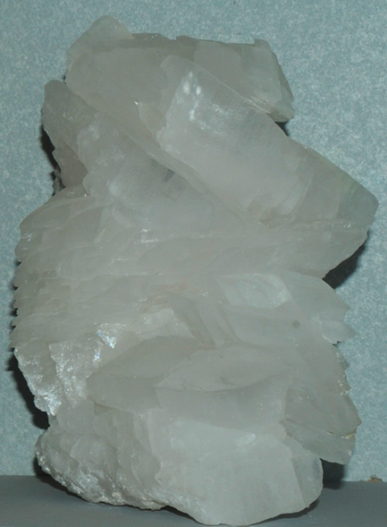
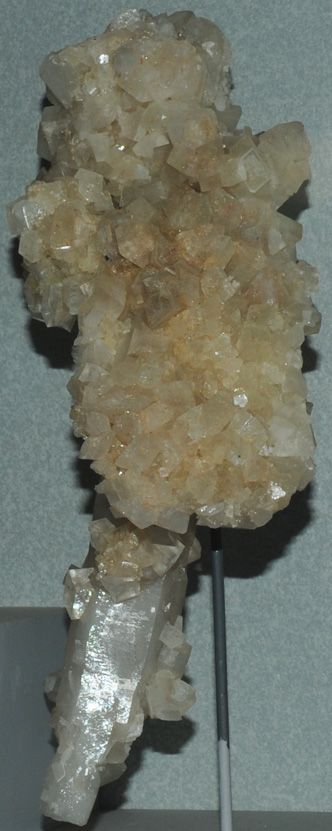

MgCO3
Magnesite is a carbonate mineral of magnesium. It has the composition MgCO3. The origin of this sample is Oberdorf, Styria, Austria. It is on display in the Smithsonian Museum of Natural History. The sample measures about 15x20 cm.
The sample at right is magnesite with quartz from Bahia, Brumado, Brazil. It measures about 10x30 cm.
|

|